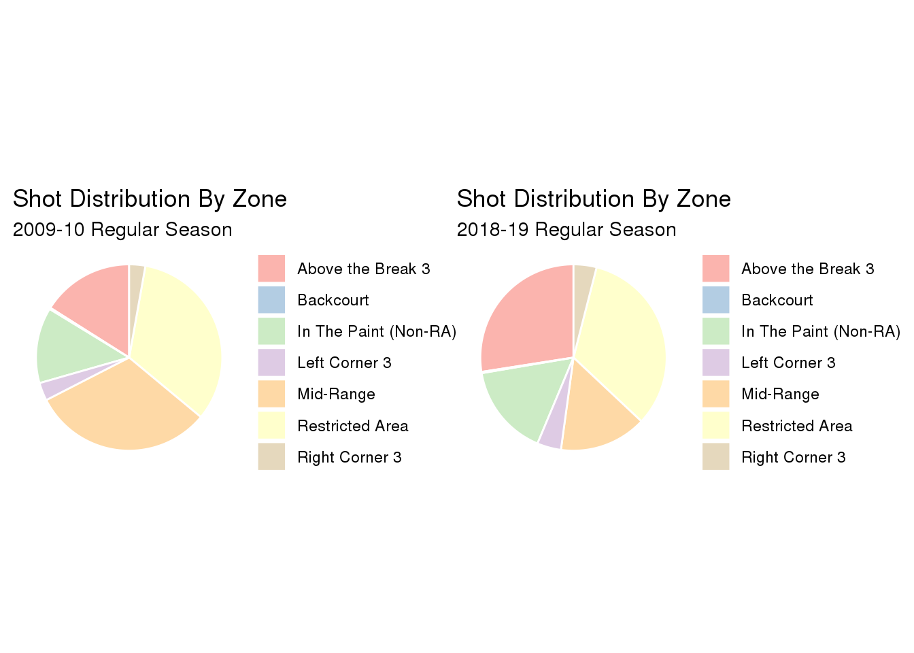
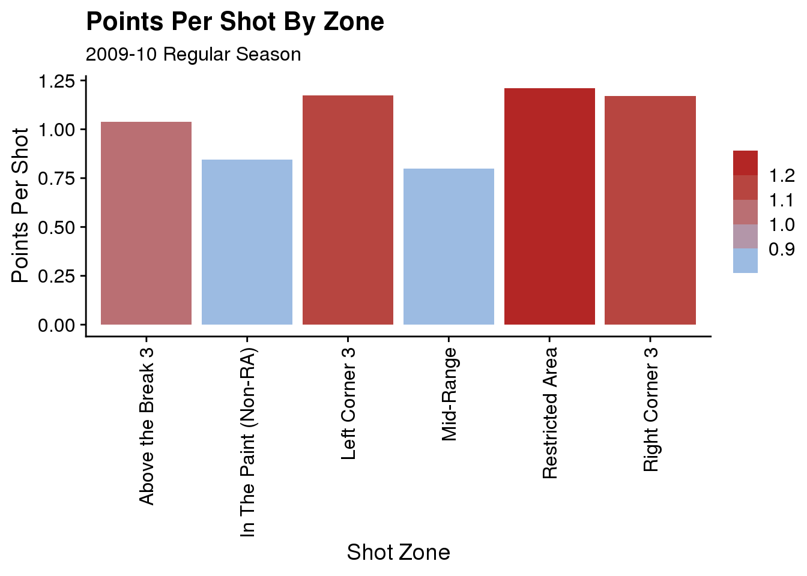

Introduction
EDA
shots10 <- read_csv("data/nba_shots_2010.csv")## Parsed with column specification:
## cols(
## .default = col_character(),
## GAME_EVENT_ID = col_double(),
## PLAYER_ID = col_double(),
## TEAM_ID = col_double(),
## PERIOD = col_double(),
## MINUTES_REMAINING = col_double(),
## SECONDS_REMAINING = col_double(),
## SHOT_DISTANCE = col_double(),
## LOC_X = col_double(),
## LOC_Y = col_double(),
## SHOT_ATTEMPTED_FLAG = col_double(),
## SHOT_MADE_FLAG = col_double(),
## GAME_DATE = col_double()
## )## See spec(...) for full column specifications.shots19 <- read_csv("data/nba_shots_2019.csv")## Parsed with column specification:
## cols(
## .default = col_character(),
## GAME_EVENT_ID = col_double(),
## PLAYER_ID = col_double(),
## TEAM_ID = col_double(),
## PERIOD = col_double(),
## MINUTES_REMAINING = col_double(),
## SECONDS_REMAINING = col_double(),
## SHOT_DISTANCE = col_double(),
## LOC_X = col_double(),
## LOC_Y = col_double(),
## SHOT_ATTEMPTED_FLAG = col_double(),
## SHOT_MADE_FLAG = col_double(),
## GAME_DATE = col_double()
## )
## See spec(...) for full column specifications.glimpse(shots10)## Observations: 200,966
## Variables: 24
## $ GRID_TYPE <chr> "Shot Chart Detail", "Shot Chart Detail", "Shot C…
## $ GAME_ID <chr> "0020900001", "0020900001", "0020900001", "002090…
## $ GAME_EVENT_ID <dbl> 2, 3, 5, 6, 7, 9, 10, 12, 14, 16, 18, 23, 25, 27,…
## $ PLAYER_ID <dbl> 2760, 951, 2544, 708, 2760, 2544, 951, 2760, 2590…
## $ PLAYER_NAME <chr> "Anderson Varejao", "Ray Allen", "LeBron James", …
## $ TEAM_ID <dbl> 1610612739, 1610612738, 1610612739, 1610612738, 1…
## $ TEAM_NAME <chr> "Cleveland Cavaliers", "Boston Celtics", "Clevela…
## $ PERIOD <dbl> 1, 1, 1, 1, 1, 1, 1, 1, 1, 1, 1, 1, 1, 1, 1, 1, 1…
## $ MINUTES_REMAINING <dbl> 11, 11, 11, 10, 10, 10, 9, 9, 9, 9, 8, 8, 8, 8, 8…
## $ SECONDS_REMAINING <dbl> 31, 12, 3, 46, 26, 6, 45, 36, 27, 6, 54, 35, 15, …
## $ EVENT_TYPE <chr> "Made Shot", "Missed Shot", "Made Shot", "Made Sh…
## $ ACTION_TYPE <chr> "Step Back Jump shot", "Jump Shot", "Jump Shot", …
## $ SHOT_TYPE <chr> "2PT Field Goal", "2PT Field Goal", "2PT Field Go…
## $ SHOT_ZONE_BASIC <chr> "In The Paint (Non-RA)", "Mid-Range", "Mid-Range"…
## $ SHOT_ZONE_AREA <chr> "Center(C)", "Right Side(R)", "Right Side Center(…
## $ SHOT_ZONE_RANGE <chr> "8-16 ft.", "16-24 ft.", "16-24 ft.", "8-16 ft.",…
## $ SHOT_DISTANCE <dbl> 9, 22, 23, 8, 7, 1, 7, 3, 15, 8, 23, 16, 1, 0, 0,…
## $ LOC_X <dbl> 36, 214, 129, 36, 26, -2, 69, 1, -11, 70, -229, 1…
## $ LOC_Y <dbl> 93, 83, 194, 75, 75, 12, 28, 34, 156, 50, 37, 39,…
## $ SHOT_ATTEMPTED_FLAG <dbl> 1, 1, 1, 1, 1, 1, 1, 1, 1, 1, 1, 1, 1, 1, 1, 1, 1…
## $ SHOT_MADE_FLAG <dbl> 1, 0, 1, 1, 1, 1, 0, 0, 1, 0, 1, 0, 0, 0, 1, 1, 1…
## $ GAME_DATE <dbl> 20091027, 20091027, 20091027, 20091027, 20091027,…
## $ HTM <chr> "CLE", "CLE", "CLE", "CLE", "CLE", "CLE", "CLE", …
## $ VTM <chr> "BOS", "BOS", "BOS", "BOS", "BOS", "BOS", "BOS", …- create shot pct vs dist table
- compare percentage of shots taken by area
shots10_2pt <- shots10 %>%
select(SHOT_DISTANCE, SHOT_TYPE, SHOT_MADE_FLAG, SHOT_ATTEMPTED_FLAG) %>%
filter(SHOT_TYPE == "2PT Field Goal") %>%
group_by(SHOT_DISTANCE) %>%
summarise(shot_percentage_by_distance =
sum(SHOT_MADE_FLAG) / sum(SHOT_ATTEMPTED_FLAG),
points_per_shot =
2 * shot_percentage_by_distance,
.groups = "keep")
shots10_3pt <- shots10 %>%
select(SHOT_DISTANCE, SHOT_TYPE, SHOT_MADE_FLAG, SHOT_ATTEMPTED_FLAG) %>%
filter(SHOT_TYPE == "3PT Field Goal") %>%
group_by(SHOT_DISTANCE) %>%
summarise(shot_percentage_by_distance =
sum(SHOT_MADE_FLAG) / sum(SHOT_ATTEMPTED_FLAG),
points_per_shot =
3 * shot_percentage_by_distance,
.groups = "keep")
shots19_2pt <- shots19 %>%
select(SHOT_DISTANCE, SHOT_TYPE, SHOT_MADE_FLAG, SHOT_ATTEMPTED_FLAG) %>%
filter(SHOT_TYPE == "2PT Field Goal") %>%
group_by(SHOT_DISTANCE) %>%
summarise(shot_percentage_by_distance =
sum(SHOT_MADE_FLAG) / sum(SHOT_ATTEMPTED_FLAG),
points_per_shot =
2 * shot_percentage_by_distance,
.groups = "keep")
shots19_3pt <- shots19 %>%
select(SHOT_DISTANCE, SHOT_TYPE, SHOT_MADE_FLAG, SHOT_ATTEMPTED_FLAG) %>%
filter(SHOT_TYPE == "3PT Field Goal") %>%
group_by(SHOT_DISTANCE) %>%
summarise(shot_percentage_by_distance =
sum(SHOT_MADE_FLAG) / sum(SHOT_ATTEMPTED_FLAG),
points_per_shot =
3 * shot_percentage_by_distance,
.groups = "keep")
# 2010 shots
shots10_pct <- shots10_2pt %>%
full_join(shots10_3pt, by = "SHOT_DISTANCE")
# 2019 shots
shots19_pct <- shots19_2pt %>%
full_join(shots19_3pt, by = "SHOT_DISTANCE")# 2010 EDA1
#NOTES
#invvestigate labels
#combine charts?
N1 <- (0:23)
N2 <- c(30, 50, 70)
plot1 <- ggplot(shots10_pct,
aes(x = SHOT_DISTANCE,
y = shot_percentage_by_distance.x * 100,
fill = shot_percentage_by_distance.x)) +
geom_bar(stat = "identity") +
labs(title = "2PT Field Goals",
subtitle = "2009-10 Regular Season") +
scale_x_continuous(name = "Shot Distance (ft)",
breaks = N1,
limits = c(0, 22)) +
scale_y_continuous(name = "Shooting Percentage",
breaks = N2,
limits = c(0, 80)) +
scale_fill_binned(low="skyblue1", high="firebrick") +
theme(legend.title = element_blank())
N3 <- (21:35)
N4 <- c(10, 20, 30, 40, 50)
plot2 <- ggplot(shots10_pct,
aes(x = SHOT_DISTANCE,
y = shot_percentage_by_distance.y * 100,
fill = shot_percentage_by_distance.y)) +
geom_bar(stat = "identity") +
labs(title = "3PT Field Goals",
subtitle = "2009-10 Regular Season") +
scale_x_continuous(name = "Shot Distance (ft)",
breaks = N3,
limits = c(21, 36)) +
scale_y_continuous(name = "Shooting Percentage",
breaks = N4,
limits = c(0, 50)) +
scale_fill_binned(low = "skyblue1", high = "firebrick") +
theme(legend.title = element_blank())
plot1 / plot2## Warning: Removed 62 rows containing missing values (position_stack).## Warning: Removed 2 rows containing missing values (geom_bar).## Warning: Removed 70 rows containing missing values (position_stack).## Warning: Removed 1 rows containing missing values (geom_bar).#2019 EDA1
#NOTES
#possibly combine charts
#investigate labels
N1 <- (0:22)
N2 <- c(30, 50, 70)
plot1 <- ggplot(shots19_pct,
aes(x = SHOT_DISTANCE,
y = shot_percentage_by_distance.x * 100,
fill = shot_percentage_by_distance.x)) +
geom_bar(stat = "identity") +
labs(title = "2PT Field Goals",
subtitle = "2018-19 Regular Season") +
scale_x_continuous(name = "Shot Distance (ft)",
breaks = N1,
limits = c(0, 22)) +
scale_y_continuous(name = "Shooting Percentage",
breaks = N2,
limits = c(0, 80)) +
scale_fill_binned(low="skyblue1", high="firebrick") +
theme(legend.title = element_blank())
N3 <- (21:35)
N4 <- c(10, 20, 30, 40, 50)
plot2 <- ggplot(shots19_pct,
aes(x = SHOT_DISTANCE,
y = shot_percentage_by_distance.y * 100,
fill = shot_percentage_by_distance.y)) +
geom_bar(stat = "identity") +
labs(title = "3PT Field Goals",
subtitle = "2018-19 Regular Season") +
scale_x_continuous(name = "Shot Distance (ft)",
breaks = N3,
limits = c(21, 36)) +
scale_y_continuous(name = "Shooting Percentage",
breaks = N4,
limits = c(0, 50)) +
scale_fill_binned(low = "skyblue1", high = "firebrick") +
theme(legend.title = element_blank())
plot1 / plot2## Warning: Removed 61 rows containing missing values (position_stack).## Warning: Removed 2 rows containing missing values (geom_bar).## Warning: Removed 68 rows containing missing values (position_stack).## Warning: Removed 2 rows containing missing values (geom_bar). ### Possible New Chart Configuration
plot26 <- ggplot(shots19_pct,
aes(x = SHOT_DISTANCE,
fill = shot_percentage_by_distance.y)) +
geom_bar(aes(y = shot_percentage_by_distance.y * 100), stat = "identity") +
geom_bar(aes(y = shot_percentage_by_distance.x * 100), stat = "identity")
labs(title = "3PT Field Goals",
subtitle = "2018-19 Regular Season") +
scale_x_continuous(name = "Shot Distance (ft)",
breaks = N3,
limits = c(0, 36)) +
scale_y_continuous(name = "Shooting Percentage",
breaks = N4,
limits = c(0, 80)) +
scale_fill_binned(low = "skyblue1", high = "firebrick") +
theme(legend.title = element_blank())## NULL# percentage of shots by area
N5 <- length(shots10$SHOT_ATTEMPTED_FLAG)
N6 <- length(shots19$SHOT_ATTEMPTED_FLAG)
# function to count shots by zone
shot_counter <- function(x, y, z) {
a <- x %>%
select(SHOT_ZONE_BASIC) %>%
filter(SHOT_ZONE_BASIC == y)
b <- length(a$SHOT_ZONE_BASIC)
c <- b / z
print(c)
}
# percent of shots by area 2010
pt10 <- shot_counter(shots10, "In The Paint (Non-RA)", N5)## [1] 0.1314949ra10 <- shot_counter(shots10, "Restricted Area", N5)## [1] 0.3322054mr10 <- shot_counter(shots10, "Mid-Range", N5)## [1] 0.3143268lc10 <- shot_counter(shots10, "Left Corner 3", N5)## [1] 0.03116448ab10 <- shot_counter(shots10, "Above the Break 3", N5)## [1] 0.1604152rc10 <- shot_counter(shots10, "Right Corner 3", N5)## [1] 0.02802962bc10 <- shot_counter(shots10, "Backcourt", N5)## [1] 0.002363584# percent of shots by area 2019
pt19 <- shot_counter(shots19, "In The Paint (Non-RA)", N6)## [1] 0.1600397ra19 <- shot_counter(shots19, "Restricted Area", N6)## [1] 0.3300267mr19 <- shot_counter(shots19, "Mid-Range", N6)## [1] 0.1516235lc19 <- shot_counter(shots19, "Left Corner 3", N6)## [1] 0.04152047ab19 <- shot_counter(shots19, "Above the Break 3", N6)## [1] 0.2746995rc19 <- shot_counter(shots19, "Right Corner 3", N6)## [1] 0.03996665bc19 <- shot_counter(shots19, "Backcourt", N6)## [1] 0.002123413# df for 2010 plot
pie_dat10 <- data.frame(
shot_zone = c("In The Paint (Non-RA)", "Restricted Area", "Mid-Range", "Left Corner 3", "Above the Break 3", "Right Corner 3", "Backcourt"),
percent = c(pt10, ra10, mr10, lc10, ab10, rc10, bc10)
)
# df for 2019 plot
pie_dat19 <- data.frame(
shot_zone = c("In The Paint (Non-RA)", "Restricted Area", "Mid-Range", "Left Corner 3", "Above the Break 3", "Right Corner 3", "Backcourt"),
percent = c(pt19, ra19, mr19, lc19, ab19, rc19, bc19)
)
Data Analysis
# 2010 Shot Dist
#NOTES
# Add photo?
zones <- c("Mid-Range", "Right Corner 3", "Left Corner 3", "Above the Break 3", "Backcourt")
mypng <- readPNG("/home/jdkincan/1001-proj-final/nba_court_1.png")
shots10_zone <- shots10 %>%
filter(SHOT_ZONE_BASIC %in% zones)
plot5 <- ggplot(shots10_zone, aes(LOC_X, LOC_Y)) +
geom_hex(binwidth = 20, na.rm = FALSE) +
scale_fill_gradient(low="skyblue1", high="firebrick") +
labs(title = "All Shots Taken Outside of the Paint", subtitle = "2009-2010 NBA Season", x = "", y = "", legend = "Frequency")
plot5#theme_void()
#ggdraw() +
#draw_image(mypng) +
#draw_plot(plot5/6)shots19_zone <- shots19 %>%
filter(SHOT_ZONE_BASIC %in% zones)
plot6 <- ggplot(shots19_zone, aes(LOC_X, LOC_Y)) +
geom_hex(binwidth = 20, na.rm = FALSE) +
scale_fill_gradient(low="skyblue1", high="firebrick") +
labs(title = "All Shots Taken Outside of the Paint", subtitle = "2018-2019 NBA Season", x = "", y = "")
plot6 
# shots10_pct
#NOTES
#Add Legend
#label hlines
# text layer?
# Data ISSUE
# inconsistent 3 collection
plot7 <- ggplot(shots10_pct, aes(x = SHOT_DISTANCE)) +
geom_line(aes(y = points_per_shot.x), color = "skyblue1") +
geom_line(aes(y = points_per_shot.y), color = "deepskyblue1") +
labs(title = "Relative Value of Field Goals",
subtitle = "2009-10 Regular Season",
x = "Shot Distance (ft)",
y = "Points Per Shot") +
theme(legend.position = "right") +
geom_vline(xintercept = 22, color = "firebrick") +
geom_vline(xintercept = 23, color = "firebrick") +
xlim(1, 34) +
ylim(0.0, 1.5)
plot8 <- ggplot(shots19_pct, aes(x = SHOT_DISTANCE)) +
geom_line(aes(y = points_per_shot.x), color = "skyblue1") +
geom_line(aes(y = points_per_shot.y), color = "deepskyblue1") +
labs(title = "Relative Value of Field Goals",
subtitle = "2018-19 Regular Season",
x = "Shot Distance (ft)",
y = "Points Per Shot") +
theme(legend.position = "right") +
geom_vline(xintercept = 21, color = "firebrick") +
geom_vline(xintercept = 23, color = "firebrick") +
xlim(1, 34) +
ylim(0.0, 1.5)
plot7 + plot8## Warning: Removed 62 row(s) containing missing values (geom_path).## Warning: Removed 72 row(s) containing missing values (geom_path).## Warning: Removed 61 row(s) containing missing values (geom_path).## Warning: Removed 70 row(s) containing missing values (geom_path).
# percentage of shots by area
# counts total shots in each zone by year
shot_counter1 <- function(x, y) {
a <- x %>%
select(SHOT_ZONE_BASIC) %>%
filter(SHOT_ZONE_BASIC == y)
b <- length(a$SHOT_ZONE_BASIC)
print(b)
}
# total number of shots by area 2010
pt10_ct <- shot_counter1(shots10, "In The Paint (Non-RA)")## [1] 26426ra10_ct <- shot_counter1(shots10, "Restricted Area")## [1] 66762mr10_ct <- shot_counter1(shots10, "Mid-Range")## [1] 63169lc10_ct <- shot_counter1(shots10, "Left Corner 3")## [1] 6263ab10_ct <- shot_counter1(shots10, "Above the Break 3")## [1] 32238rc10_ct <- shot_counter1(shots10, "Right Corner 3")## [1] 5633bc10_ct <- shot_counter1(shots10, "Backcourt")## [1] 475# total number of shots by area 2019
pt19_ct <- shot_counter1(shots19, "In The Paint (Non-RA)")## [1] 35122ra19_ct <- shot_counter1(shots19, "Restricted Area")## [1] 72427mr19_ct <- shot_counter1(shots19, "Mid-Range")## [1] 33275lc19_ct <- shot_counter1(shots19, "Left Corner 3")## [1] 9112ab19_ct <- shot_counter1(shots19, "Above the Break 3")## [1] 60285rc19_ct <- shot_counter1(shots19, "Right Corner 3")## [1] 8771bc19_ct <- shot_counter1(shots19, "Backcourt")## [1] 466# function to calculate points per shot by zone by year
made_shot_counter <- function(x, y, z, w) {
a <- x %>%
select(SHOT_ZONE_BASIC, SHOT_MADE_FLAG) %>%
filter(SHOT_MADE_FLAG == 1, SHOT_ZONE_BASIC == y)
b <- length(a$SHOT_ZONE_BASIC)
c <- b / z
d <- c * w
print(d)
}
# total number of shots by area 2010
pt10_pct <- made_shot_counter(shots10, "In The Paint (Non-RA)", pt10_ct, 2)## [1] 0.8461364ra10_pct <- made_shot_counter(shots10, "Restricted Area", ra10_ct, 2)## [1] 1.211767mr10_pct <- made_shot_counter(shots10, "Mid-Range", mr10_ct, 2)## [1] 0.8002976lc10_pct <- made_shot_counter(shots10, "Left Corner 3", lc10_ct, 3)## [1] 1.174517ab10_pct <- made_shot_counter(shots10, "Above the Break 3", ab10_ct, 3)## [1] 1.03713rc10_pct <- made_shot_counter(shots10, "Right Corner 3", rc10_ct, 3)## [1] 1.171134bc10_pct <- made_shot_counter(shots10, "Backcourt", bc10_ct, 3)## [1] 0.1073684# total number of shots by area 2019
pt19_pct <- made_shot_counter(shots19, "In The Paint (Non-RA)", pt19_ct, 2)## [1] 0.8073003ra19_pct <- made_shot_counter(shots19, "Restricted Area", ra19_ct, 2)## [1] 1.258481mr19_pct <- made_shot_counter(shots19, "Mid-Range", mr19_ct, 2)## [1] 0.8056499lc19_pct <- made_shot_counter(shots19, "Left Corner 3", lc19_ct, 3)## [1] 1.158582ab19_pct <- made_shot_counter(shots19, "Above the Break 3", ab19_ct, 3)## [1] 1.048072rc19_pct <- made_shot_counter(shots19, "Right Corner 3", rc19_ct, 3)## [1] 1.133166bc19_pct <- made_shot_counter(shots19, "Backcourt", bc19, 3)## [1] 19779.48# df for 2010 plot
bar_dat10 <- data.frame(
shot_zone = c("In The Paint (Non-RA)", "Restricted Area", "Mid-Range", "Left Corner 3", "Above the Break 3", "Right Corner 3"),
ptspershot = c(pt10_pct, ra10_pct, mr10_pct, lc10_pct, ab10_pct, rc10_pct)
)
# df for 2019 plot
bar_dat19 <- data.frame(
shot_zone = c("In The Paint (Non-RA)", "Restricted Area", "Mid-Range", "Left Corner 3", "Above the Break 3", "Right Corner 3"),
ptspershot = c(pt19_pct, ra19_pct, mr19_pct, lc19_pct, ab19_pct, rc19_pct)
)
# combined df
ptsperdat <- bar_dat10 %>%
left_join(bar_dat19, by = "shot_zone")# create another plot with zone percentage by year
plot9 <- ggplot(ptsperdat, aes(x = shot_zone, y = ptspershot.x, fill = ptspershot.x)) +
geom_bar(stat = "identity") +
labs(title = "Points Per Shot By Zone",
subtitle = "2009-10 Regular Season")
#scale_x_discrete(name = "Shot Distance (ft)",
## limits = c(0, 22)) +
#scale_y_discrete(name = "Shooting Percentage",
# breaks = N2,
# limits = c(0, 80)) +
#scale_fill_binned(low="skyblue1", high="firebrick") +
#theme(legend.title = element_blank())
plot9plot27 <- ggplot(ptsperdat,
aes(x = shot_zone)) +
geom_bar(aes(y = ptspershot.y), stat = "identity") +
geom_bar(aes(y = ptspershot.x), stat = "identity")
plot27
#labs(title = "Points Per Shot By Zone",
# subtitle = "2018-19 Regular Season") +
#scale_x_continuous(name = "Shot Distance (ft)",
# breaks = N3,
# limits = c(0, 36)) +
#scale_y_continuous(name = "Shooting Percentage",
# breaks = N4,
# limits = c(0, 80)) +
#scale_fill_binned(low = "skyblue1", high = "firebrick") +
#theme(legend.title = element_blank())